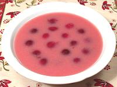

|
Sour Cherry Soup - ColdHungary - Hideg Meggyleves | ||||
| Serves: Effort: Sched: DoAhead: |
6 dessert ** 3 min Yes |
In Hungary this is served as a soup before the main course. In North America it's served as a dessert. There are many variations (see Note-3) and no official "right way". | |||
|
1 ----- 1/2 5 1/2 1/8 1/4 ----- 2 1/3 |
# --- c c t t --- T c |
Sour Cherries (1) -- Broth Lemon Zest Water Sugar (2) Cinnamon Salt --------- Flour Sour Cream |
Make: - (30 min)
|